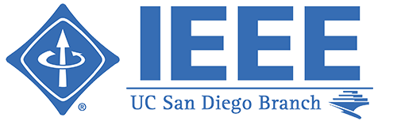
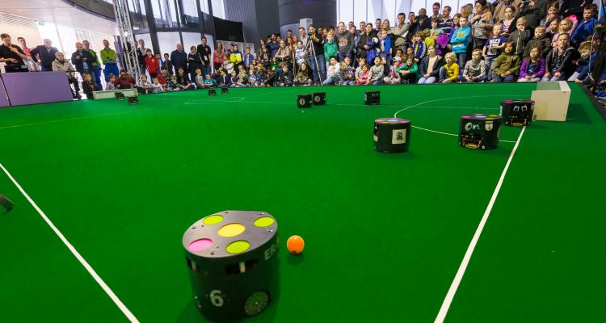
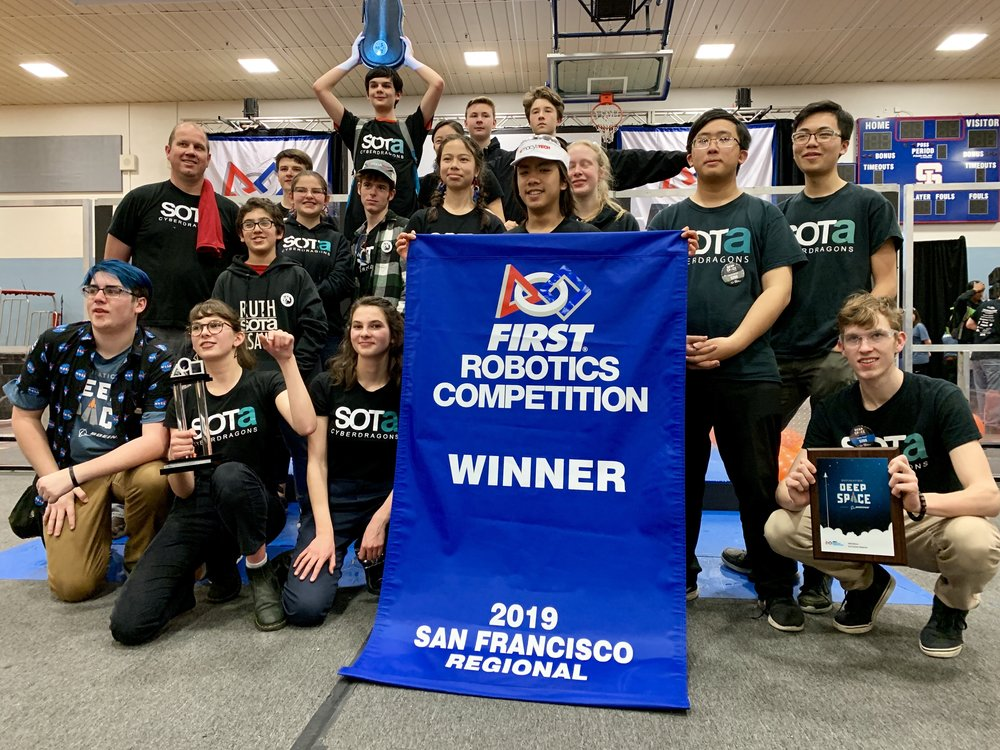
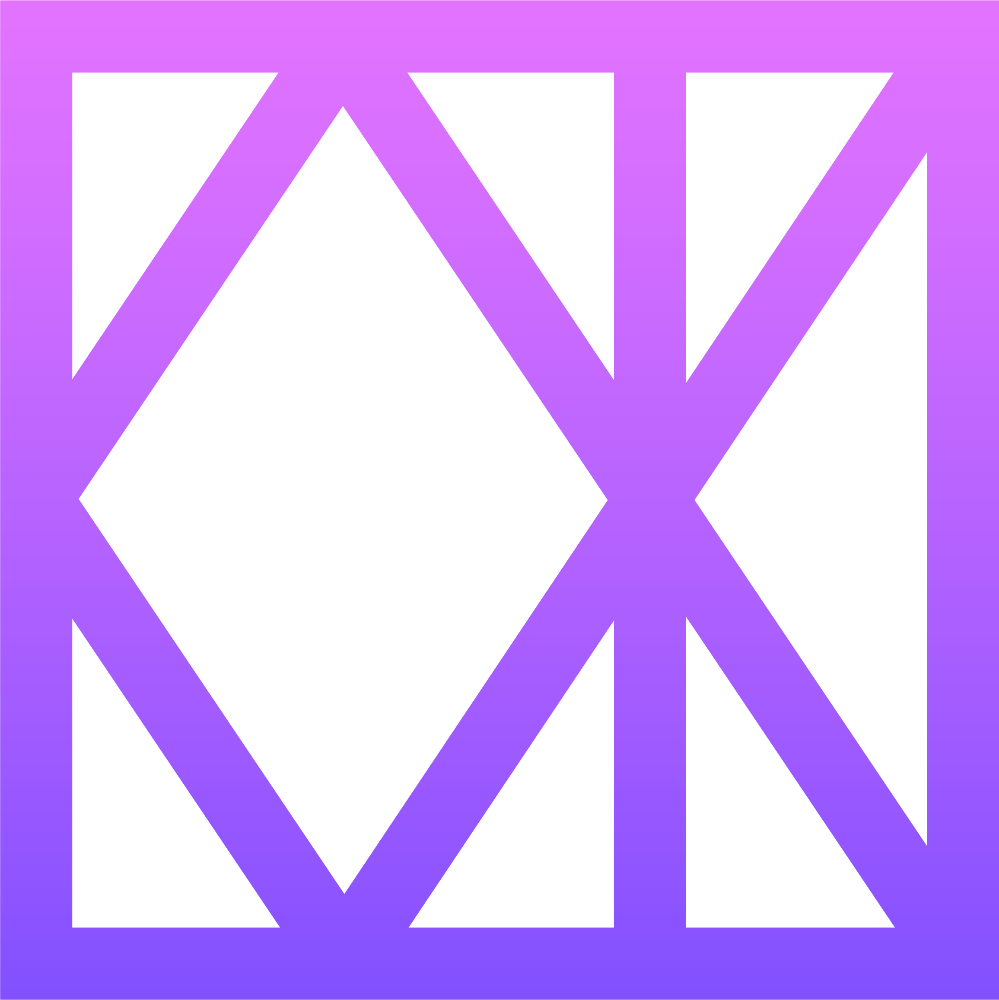
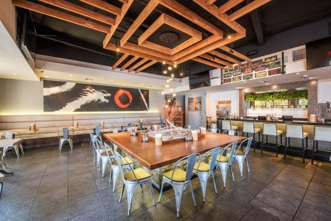
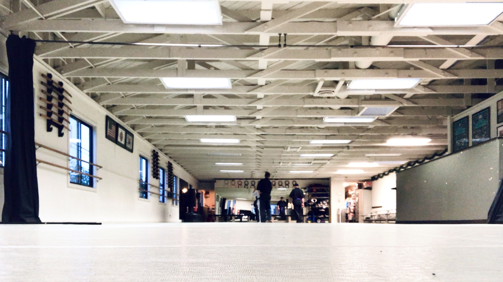

EXPERIENCE
UCSD IEEE
In my second year of university, I joined UCSD's IEEE Engineering Society as a project lead for one of their annual projects, Robocup Soccer. The goal of the team in the first quarter was to develop a functioning prototype so the entire team could potentially qualify for internationals. Using the experience I had developed from FIRST Robotics, I lead my division to develop the intial hardware of the robot. Due to the time constraints of the first quarter, my division teamed up with other divisions to work on different aspects of the robot; because my division was already advanced in progress on the hardware, we decided to focus on the hardware of the robot while the other teams developed the programming and electronics.

Robolink
With my prior experience in robotics competitions and robotics programming completed as I enrolled in UCSD, I decided I wanted to get back into the robotics competition field. Robolink offered a position as a robotics instructor to teach kids not only the basics of programming through robots, but also the many experiences and joys it offers from simplying seeing something move to the excitement of competitions.
Robolink, provided an opportunity for its students to participate in VEX IQ, an international robotics competition for kids in elementary and middle school. As a coach/instructor, I have to teach my students how to build a proper robot with common robotics concepts, how to program it, and help them practice playing the game.
FIRST Robotics

While my high school was rich in opportunity for the arts, there was an imbalance. All the emphasis for the arts meant a lack of focus for STEM education, a career path I was interested in. To supplement my passion for Engineering at the time, I decided to start the school's FIRST robotics team. Initially it was difficult to find support, because no one knew about the idea I had. But when the word spread, other students with similar interests came. The team started with just me attempting to fundraise the registration fee of $6,000. Luckily, with the aid of a grant I applied for and the school's administration, I was able to begin my endeavors.
Building the team's first year robot was tough. If it weren't for the help of the dedicated members and experienced parents, the team would not have had a functioning robot at all. While the robot did not do so well in competition the first year, it was an worthy accomplishment for the team nonetheless. In the following years, the team caught on successfully and expanded to 40+ members, becoming the largest organization in the school. From the founding  team, I learned many skills from CAD, machining, Java robotics programming, electrical engineering, and business development. Currently, Team 5700: SOTA Cyberdragons is thriving in the world of FIRST Robotics, winning San Francisco Regional 2019, winning Chezy Champs 2019 and competing in the international FIRST championships in Houston, Texas.
The Taylor Collaboration Lab
- Developed presentation on arthroscopic tool designs used in minimal-invasive arthroscopy.
- Learned and used Computer-Aid Design for part manufacturing.
- Learned and applied G-code (programming language) for CNC machining
KOTX UCSD

- KOTX is a KPOP Social and Dance Organization.
- Designed and populated KOTX website with Wordpress.
- Designed Media material using Premiere Pro, After Effects, Photoshop, Lightroom, and Garageband.
- DOP (Director of Photography) for various video projects.
Tajima Japanese Restaurant
Although, I was applying to a lot of Computer Science related internships at the time, I figured university was the optimal time for me to get the experience in a ramen restaurant's kitchen that I've had thoughts about. I knew that somewhere down the line, I would want to start a ramen chain business because I have had a reoccuring passion for ramen since I was a kid, so I decided to ask around local restaurants for a position in the kitchen.
Despite my lack of experience, Tajima offered me a position in the kitchen. Although I started my first day as a dishwasher, I believe the head chef saw my passion for the kitchen, because it wasn't long after that he taught me more. I hope to learn as much as I can while I'm with Tajima, so I can bring my dreams of being a ramen chef to life.
Hapkido USA
My journey in Hapkido USA began when I was 7. My father enrolled me as a student because I got in a fight at school with 5th graders as a kindergartener, and I didn't know how to protect myself.
After many years, I eventually became a 3rd Dan Black belt and took on the role of an instructor. Initially with my experience with harsh teachers in Kung Fu, I acted as a strict teacher to command attention. However, I eventually realized that the enforcing would grow mentally draining, and completely unnecessary. Instead, I adapted to learn to communicate with the kid students as if they were adults with rational mentalities. By giving them the respect they deserve until proven otherwise, I realized that the kid students were able to perform just as well as when I was a stricter communicator.
With the experience as an instructor for students of all ages for three years, a lot of opportunities opened for me with my leadership abilities, communication, and other soft skills.